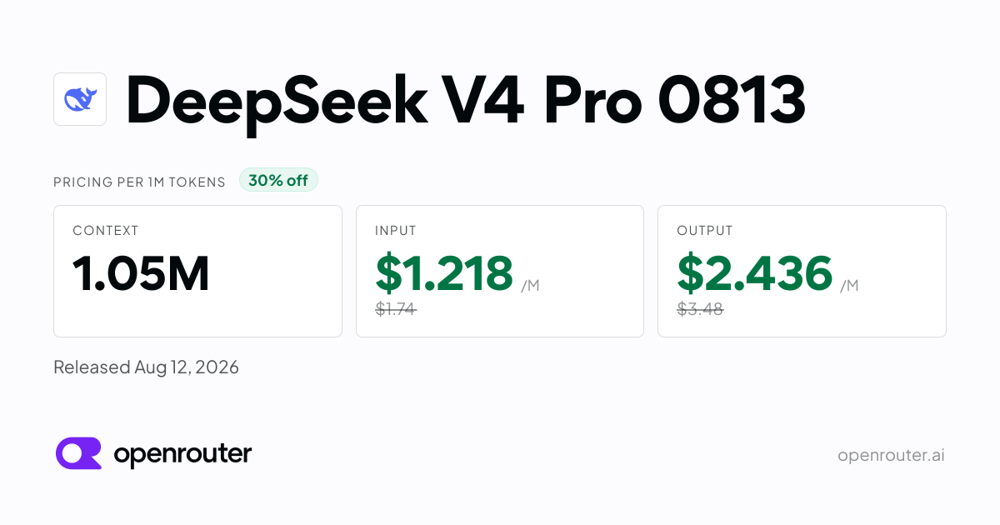

03 openrouter.ai 게시일 2026.08.12
DeepSeek V4 Pro 0813, 12개 사업자 가격 갈린다

DeepSeek V4 Pro 0813의 API 가격표와 사업자별 성능 비교가 공개됐다. 이 모델은 대형 MoE 구조를 쓴다고 소개됐다. 핵심 정보는 세 가지다. 입력·출력 단가, 1,048,576 token 컨텍스트, 그리고 12개 사업자별 속도와 가용성 차이다.
핵심 브리핑
DeepSeek V4 Pro 0813은 DeepSeek의 대형 MoE 모델로 소개됐다. 기본 가격은 입력과 출력 모두 사업자에 따라 조금씩 달랐다. 가장 눈에 띄는 점은 1,048,576 token 컨텍스트와 다수 사업자 공급 구조다.
- 기본 가격: $1.218 per million input tokens, $2.436 per million output tokens
- 컨텍스트 윈도우: 1,048,576 token
- 공급 사업자 수: 12 providers
사업자별 수치도 함께 공개됐다. 같은 모델이라도 응답 시작 시간과 초당 토큰 수, 업타임이 서로 달랐다. 운영 환경에서는 모델 성능 못지않게 공급 경로를 따져야 한다.
일부 사업자는 할인 가격을 제시했다. 일부 사업자는 더 낮은 레이턴시를 내세웠다. 반면 업타임은 DeepSeek 자체 제공이 99.95%로 가장 높게 적혔다.
주요 트렌드
이 사례는 프런티어 모델 시장이 단일 API 경쟁에서 멀티 프로바이더 경쟁으로 옮겨가고 있음을 보여준다. 이제 모델 회사가 직접 파는 채널과 중개 사업자가 함께 경쟁한다. 고객은 모델 하나를 고른 뒤에도 어디서 호출할지 다시 선택해야 한다.
가격 정책도 계층화되고 있다. 입력·출력 단가뿐 아니라 cache read 가격까지 따로 제시한다. 긴 컨텍스트를 자주 쓰는 고객은 단순한 토큰 단가보다 캐시 정책이 더 중요할 수 있다.
가용성 측면에서도 선택지가 넓어졌다. 12개 사업자가 붙으면 조달 리스크를 나눌 수 있다. 반대로 사업자별 성능 편차가 커서 표준화된 운영이 어려워질 수도 있다.
| 사업자 | 입력 /M | 출력 /M | Cache read /M | Latency | Throughput | Uptime |
|---|---|---|---|---|---|---|
| GMICloud 30% off | $ 1.218 | $ 2.436 | $ 0.1015 | 3.87 s | 52 tps | 99.56% |
| Baseten | $ 1.32 | $ 3.96 | $ 0.132 | 0.67 s | 95 tps | 98.17% |
| SiliconFlow | $ 1.32 | $ 3.96 | $ 0.44 | 1.36 s | 69 tps | 99.59% |
| NovitaAI | $ 1.32 | $ 3.96 | $ 0.35 | 1.47 s | 98 tps | 99.59% |
| Parasail | $ 1.32 | $ 3.96 | $ 0.044 | 0.41 s | 44 tps | 99.74% |
| DeepSeek | $ 1.32 | $ 3.96 | $ 0.044 | 1.30 s | 86 tps | 99.95% |
업계의 움직임
Reddit r/LocalLLaMA와 Simon Willison Blog 등 커뮤니티 채널이 이 모델을 함께 다뤘다. 관심은 모델 소개 자체보다 가격표와 사업자별 차이에 쏠렸다. 아직 대형 고객 도입 사례나 경쟁사 대응은 공개되지 않았다.
시사점과 체크포인트
우리 회사가 외부 LLM API를 고를 때는 모델명만 비교하면 부족하다. 같은 모델이라도 사업자별 레이턴시와 업타임 차이가 커서, 고객 서비스와 내부 배치 작업의 최적 선택이 달라질 수 있다.
검토 항목은 다음과 같다.
- 적용 업무 구분: 실시간 상담 보조, 내부 문서 검색, 야간 배치 분석
- 확인 질문: 사업자별 데이터 저장 위치, 금융 규제 대응 문서, 장애 시 대체 경로 제공 여부
- 비용 항목: 입력·출력 단가 외에 cache read 가격이 총비용에 미치는 영향
- 운영 설계: 한 사업자 단일 사용이 나은지, 다중 사업자 라우팅이 나은지
이번 자료에는 라이선스 조건, 안전 정책, 엔터프라이즈 지원 범위가 없다. 장문 컨텍스트가 실제로 어떤 품질을 내는지도 확인되지 않았다. PoC에서는 긴 문서 처리 품질과 장애 전환 시나리오를 따로 시험해야 한다.
주요 용어
원문 정보
제목: DeepSeek V4 Pro 0813
게시일: 2026.08.12
출처 URL: https://openrouter.ai/deepseek/deepseek-v4-pro-0813